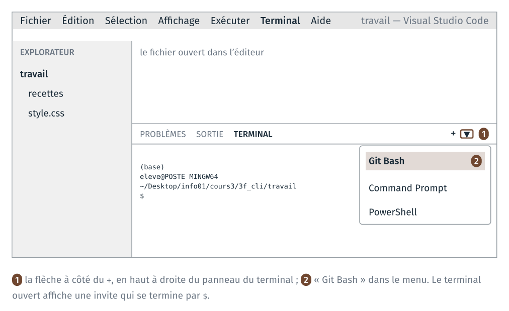
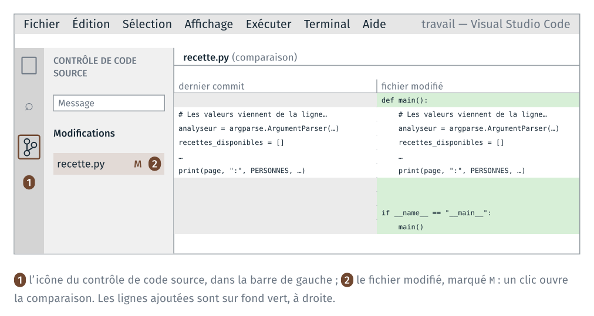
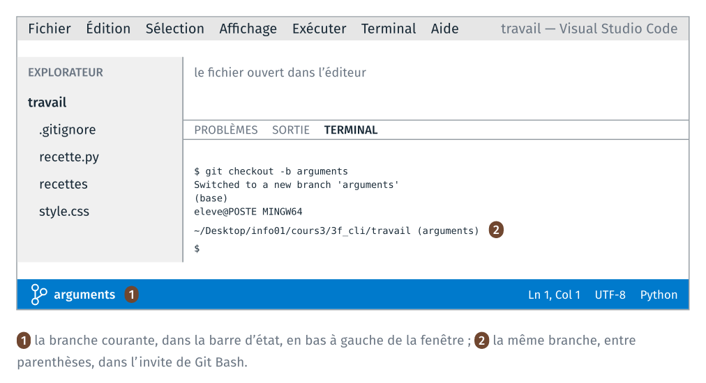
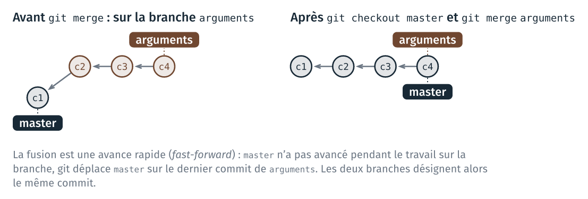

TD 3a — Une ligne de commande pour la recette#
Ce guide détaille les étapes de la feuille du TD 3a. Pour chaque étape, il indique :
le dossier dans lequel se placer ;
les fichiers au début et à la fin de l’étape ;
le code à écrire, et l’endroit du fichier où l’écrire ;
les commandes à taper dans le terminal ;
comment vérifier que chaque commande a fonctionné.
Le TD transforme le code du notebook recette.ipynb (TD 1a) en un programme
recette.py, lancé depuis un terminal. Chaque étape se termine par un commit
git.
Le code de ce guide se copie depuis guide_3a_cli.html, ouvert dans un
navigateur, ou depuis guide.ipynb, ouvert dans JupyterLab. Copié depuis le
PDF, il perd ses indentations, qu’il faut alors refaire dans VS Code.
Le tableau résume les étapes ; chaque numéro d’étape renvoie à la page qui la détaille. Chaque page commence par un encadré qui résume l’étape.
Étape |
Ce qu’on fait |
Commits à la fin |
|---|---|---|
préparer le dossier |
0 |
|
écrire |
1 |
|
mettre le programme dans une fonction |
2 |
|
lire la recette, le nombre de personnes et les unités sur la ligne de commande, sur une branche |
5 |
|
écrire un |
6 |
|
5 (facultatif, après la séance) |
ranger le code dans |
7 |
6 (facultatif, après la séance) |
installer le programme comme une commande |
8 |
Rappels avant de commencer#
Un seul outil : VS Code. Tout le TD se fait dans VS Code : l’explorateur, à gauche, montre les fichiers ; l’éditeur, au centre, affiche le fichier ouvert ; le terminal, en bas, sert à taper les commandes.
Le terminal Git Bash. Le terminal est Git Bash, celui du cours 2. Pour
l’ouvrir : menu Terminal → Nouveau terminal. Si le terminal ouvert n’est pas
Git Bash, cliquer sur la flèche à côté du +, en haut à droite du panneau
du terminal, puis choisir « Git Bash ».

L’invite de Git Bash tient sur plusieurs lignes : le nom de l’environnement
conda actif entre parenthèses, (base), puis eleve@POSTE MINGW64 suivi
du dossier courant ; la dernière ligne commence par $, et la commande se
tape après. Les chemins relatifs des commandes partent du dossier courant.
Dans Git Bash, les chemins s’écrivent avec des / : C:\Users devient
/c/Users.
Changer de dossier. pwd affiche le dossier courant, ls liste son
contenu, cd nom_du_dossier descend dans un sous-dossier, cd .. remonte
d’un niveau. L”annexe rappelle les commandes du terminal
Windows (cmd) et de Git Bash.
Enregistrer un fichier. Dans VS Code, Ctrl+S. Un fichier modifié et
non enregistré a un point blanc sur son onglet ; python lit le fichier
enregistré sur le disque, pas ce qui est affiché dans l’éditeur.
Si une étape échoue. git status montre les fichiers modifiés depuis le
dernier commit. git restore recette.py remet recette.py dans l’état du
dernier commit. Le résultat attendu de l’étape 1 est dans
depart/secours/recette.py.
Étape 0 · Préparer le dossier de travail et le dépôt git#
À faire : copier
depart/recettes/etdepart/style.cssdanstravail/; ouvrirtravail/dans VS Code, avec un terminal Git Bash ; une fois par poste, rendrecondadisponible dans Git Bash ;git init; un fichier.gitignoreavec la lignesortie/.À obtenir :
git statuslisterecettes/,style.csset.gitignore, et pasdepart/.
Dossier de départ : cours3/3a_cli/, tel que décompressé depuis
l’archive.
3a_cli/
├── depart/
│ ├── recettes/
│ │ ├── crepes/
│ │ │ ├── ingredients.csv
│ │ │ ├── photo.jpg
│ │ │ └── recette.md
│ │ ├── mousse_chocolat/ (même contenu)
│ │ ├── pate_pizza/ (même contenu)
│ │ ├── salade_lentilles/ (même contenu)
│ │ └── CREDITS.md
│ ├── style.css
│ ├── modeles/
│ │ ├── README.md
│ │ └── pyproject.toml
│ ├── secours/
│ │ └── recette.py
│ └── outils/
└── travail/ (vide)
0.1 Copier les données dans travail/#
Dans l’explorateur de fichiers Windows, copier le dossier
depart/recettes/ et le fichier depart/style.css dans travail/.
Vérification : travail/ contient recettes/ et style.css.
0.2 Ouvrir travail/ dans VS Code#
Dans VS Code : Fichier → Ouvrir le dossier… → choisir 3a_cli/travail/.
Ouvrir ensuite un terminal Git Bash (voir les rappels).
Vérification : le panneau de gauche de VS Code affiche recettes/ et
style.css ; dans le terminal, pwd affiche un chemin qui se termine par
3a_cli/travail.
Si ce n’est pas le cas, taper cd suivi du chemin du dossier travail/,
par exemple :
cd /c/Users/eleve/Desktop/info01/cours3/3a_cli/travail
0.3 conda dans Git Bash#
Le programme utilise le Python et le pandoc d’Anaconda. Git Bash ne connaît
pas la commande conda au démarrage. Dans le terminal :
source /c/ProgramData/anaconda3/etc/profile.d/conda.sh
conda init bash
source rend conda disponible dans ce terminal. conda init bash écrit la
même instruction dans un fichier que Git Bash lit à chaque ouverture : les
terminaux suivants ont conda, et l’environnement base est activé sans
rien taper. Cette partie ne se fait qu’une fois par poste.
Fermer le terminal (icône de corbeille, en haut à droite du panneau du terminal) et en ouvrir un nouveau, Git Bash.
Vérification : la première ligne de l’invite est (base). Puis :
which python
pandoc --version
which python affiche /c/ProgramData/anaconda3/python ; pandoc --version affiche pandoc 2… ou pandoc 3….
Si source répond No such file or directory, Anaconda est installé dans
un autre dossier du poste. Essayer
source /c/Users/$USERNAME/anaconda3/etc/profile.d/conda.sh, ou demander à
l’enseignant.
Si chaque nouveau terminal affiche l’aide de cygpath (Usage: cygpath …)
puis bash: : No such file or directory, l’environnement est tout de même
activé. Le message vient d’un cygpath fourni par Anaconda, qui échoue
sous Git Bash. Pour le faire disparaître, taper une fois, puis ouvrir un
nouveau terminal :
sed -i '1i cygpath() { /usr/bin/cygpath "$@"; }' ~/.bash_profile
0.4 Créer le dépôt git#
Dans le terminal, dans travail/ :
git init
Vérification : git affiche Initialized empty Git repository in …/travail/.git/ (ou Dépôt Git vide initialisé, selon la langue). Puis :
git status
affiche recettes/ et style.css sous « Untracked files » (« Fichiers non
suivis »). Si
git status affiche depart/, le dépôt a été créé dans 3a_cli/ au lieu de
travail/ : supprimer le dossier caché 3a_cli/.git, revenir dans
travail/ et recommencer.
Régler ensuite votre nom et votre adresse pour ce dépôt. Le poste est
partagé : le réglage se fait dans le dépôt, sans --global, et ne vaut que
pour lui. Le réglage du cours 2 avait été fait dans un autre dépôt.
git config user.name "Prénom Nom"
git config user.email "prenom.nom@exemple.fr"
git config user.name, sans valeur, affiche le nom enregistré pour ce dépôt.
0.5 Le fichier .gitignore#
Le programme écrira ses pages dans un dossier sortie/. Ces fichiers sont
produits par le programme : ils ne sont pas versionnés.
.gitignore est un fichier texte, placé dans le dossier du dépôt. Chaque
ligne de ce fichier nomme un fichier ou un dossier que git ne suit pas. Son
nom commence par un point et n’a pas d’autre extension.
Créer le fichier vide. Dans le terminal, dans
travail/:touch .gitignore
Le fichier se crée aussi dans VS Code : dans l’explorateur, clic droit, « New File… » (« Nouveau fichier… »), puis le nom
.gitignore.Ouvrir
.gitignoredans VS Code, y écrire une seule ligne, puis enregistrer (Ctrl+S). Le fichier contient alors exactement :sortie/
La barre oblique finale désigne un dossier : tout ce que contiendra
sortie/est ignoré.
Vérification : l’onglet .gitignore de VS Code montre la ligne
sortie/ ; git status affiche .gitignore parmi les fichiers non suivis.
Dossier à la fin de l’étape 0 :
travail/
├── .git/ (caché : le dépôt)
├── .gitignore
├── recettes/
└── style.css
Pas de commit à cette étape : le premier commit vient avec le code.
Étape 1 · Le code du notebook dans un fichier#
À faire : écrire
recette.pyen quatre blocs, avec le code donné ;git add ., puis le premier commit.À obtenir :
python recette.pyécritsortie/crepes.html;git log --onelineaffiche une ligne.
Entrée : les cellules du notebook recette.ipynb (TD 1a), dans leur
version finale : sections 1, 3.1, 3.3 et 4.3.
Sortie : un fichier travail/recette.py ; lancé par
python recette.py, il écrit sortie/crepes.html.
Créer le fichier recette.py dans travail/ (clic droit → Nouveau fichier).
Le fichier se remplit en quatre blocs, dans cet ordre, de haut en bas.
1.1 En tête : les imports, les trois valeurs, les chemins#
Coller en haut du fichier :
"""La recette des crêpes pour quatre personnes, en page HTML, par pandoc."""
import csv
import shutil
import subprocess
from pathlib import Path
# Les trois valeurs à changer
NOM = "crepes"
PERSONNES = 4
UNITES = "SI" # "SI" ou "US"
# Les chemins partent du dossier du terminal (section 3.3 du notebook)
RACINE = Path.cwd()
DONNEES = RACINE / "recettes"
STYLE = RACINE / "style.css"
SORTIE = RACINE / "sortie"
Enregistrer, puis dans le terminal, dans travail/ :
python recette.py
Vérification : la commande ne fait rien et n’affiche rien. Pas de message d’erreur : les imports et les chemins sont corrects.
1.2 Les fonctions utiles#
Sous le bloc précédent, coller les fonctions de la section 1 du notebook (elles sont reproduites ici) :
FACTEURS = {"g": (28.3495, "oz"), "ml": (236.588, "cup")}
def lire_ingredients(chemin):
"""Les ingrédients du fichier CSV, quantités converties en nombres."""
ingredients = []
with open(chemin, encoding="utf-8", newline="") as fichier:
lecteur = csv.reader(fichier)
next(lecteur)
for nom, quantite, unite in lecteur:
ingredients.append((nom, float(quantite), unite))
return ingredients
def convertir(quantite, unite):
"""Une quantité et son unité, exprimées en unités américaines."""
if unite in FACTEURS:
diviseur, nouvelle_unite = FACTEURS[unite]
return quantite / diviseur, nouvelle_unite
return quantite, unite
def adapter(ingredients, personnes, unites):
"""La recette pour ce nombre de personnes, dans ce système d'unités."""
resultat = []
for nom, quantite, unite in ingredients:
quantite = quantite * personnes
if unites == "US":
quantite, unite = convertir(quantite, unite)
resultat.append((nom, quantite, unite))
return resultat
def tableau(ingredients):
"""Le tableau Markdown des ingrédients, quantités écrites à trois chiffres."""
lignes = ["| Ingrédient | Quantité |", "|---|---|"]
for nom, quantite, unite in ingredients:
lignes.append(f"| {nom} | {quantite:.3g} {unite}".rstrip() + " |")
return "\n".join(lignes)
Vérification : python recette.py ne fait toujours rien. Les def
définissent les fonctions sans les exécuter.
1.3 Le programme : la recette complétée en Markdown#
Sous les fonctions, écrire le programme, qui reprend le corps de la fonction
generer du notebook (section 3.1) avec les chemins de la section 3.3. Les
deux blocs with du notebook sont écrits ici avec read_text et
write_text, deux méthodes d’un Path : read_text renvoie tout le
contenu du fichier en une chaîne, write_text écrit une chaîne dans le
fichier, chacune en une ligne, sans open ni with. La section 11 de
fichiers.ipynb, à lire après la séance, les détaille.
# La recette : le tableau des ingrédients inséré sous « ## Ingrédients »
ingredients = lire_ingredients(DONNEES / NOM / "ingredients.csv")
ingredients = adapter(ingredients, PERSONNES, UNITES)
source = (DONNEES / NOM / "recette.md").read_text(encoding="utf-8")
titre = source.splitlines()[0].lstrip("# ")
intitule = f"## Ingrédients pour {PERSONNES} personnes en {UNITES}" # les valeurs entre accolades sont insérées dans le texte
complete = source.replace("## Ingrédients", intitule + "\n\n" + tableau(ingredients))
# Le Markdown complet et la feuille de style, dans sortie/
SORTIE.mkdir(exist_ok=True)
markdown = SORTIE / (NOM + ".md")
markdown.write_text(complete, encoding="utf-8")
shutil.copy(STYLE, SORTIE / "style.css")
La ligne titre = … prend la première ligne de la recette (# Crêpes) et
retire le # et l’espace : pandoc s’en sert comme titre de la page.
shutil.copy copie la feuille de style à côté de la page.
Enregistrer, puis python recette.py.
Vérification : un dossier sortie/ apparaît dans travail/, avec
crepes.md et style.css. Ouvrir sortie/crepes.md dans VS Code : le
tableau des ingrédients est sous « ## Ingrédients ».
1.4 Le programme : la page HTML par pandoc#
À la fin du fichier, coller l’appel de pandoc de la section 4.3 du notebook :
# La page HTML, par pandoc
page = SORTIE / (NOM + ".html")
subprocess.run(
["pandoc", str(markdown), "-o", str(page),
"--standalone", "--css", "style.css", "--metadata", "title=" + titre],
check=True,
)
print(page, ":", PERSONNES, "personne(s), unités", UNITES)
subprocess.run ne prend que des chaînes : les chemins Path sont passés
par str(…). Dans un fichier .py, rien ne s’affiche sans print.
Enregistrer, puis python recette.py.
Vérification : le terminal affiche le chemin de la page, suivi de
: 4 personne(s), unités SI. sortie/crepes.html existe ; un double-clic
dans l’explorateur l’ouvre dans le navigateur, avec le tableau et le style.
Erreurs fréquentes :
FileNotFoundError: … recettes\crepes\ingredients.csv: le terminal n’est pas danstravail/.Path.cwd()est le dossier du terminal.FileNotFoundErrorsurpandoc, oupython: command not found: la première ligne de l’invite n’est pas(base), conda n’est pas activé dans ce terminal. Refaire l’étape 0.3.IndentationError: une ligne collée a gardé des espaces en trop au début. Les lignes du programme commencent en colonne 1.
1.5 Le premier commit#
Dans le terminal, dans travail/ :
git status
Vérification : .gitignore, recette.py, recettes/ et style.css
sont listés comme non suivis. sortie/ n’est pas listé : .gitignore
l’exclut.
git add .
git commit -m "Le programme du notebook, dans un fichier"
Vérification : git affiche le nombre de fichiers ajoutés. Puis :
git status
git log --oneline
git status affiche « rien à valider, la copie de travail est propre » ;
git log --oneline affiche une ligne.
Dossier à la fin de l’étape 1 :
travail/
├── .git/
├── .gitignore
├── recette.py
├── recettes/
├── sortie/ (non versionné)
│ ├── crepes.html
│ ├── crepes.md
│ └── style.css
└── style.css
Étape 2 · Une fonction main#
À faire : mettre le programme dans
def main():, appelée sousif __name__ == "__main__":; un commit.À obtenir : la même page ; deux lignes dans
git log --oneline.
Entrée : recette.py de l’étape 1.
Sortie : le même fichier, dont le programme est dans une fonction
main, appelée en bas du fichier. La page produite est la même.
2.1 Le programme dans main#
Dans recette.py, repérer la première ligne du programme :
# La recette : le tableau des ingrédients inséré sous « ## Ingrédients »
Juste au-dessus, écrire :
def main():
Sélectionner toutes les lignes du programme, de ce commentaire jusqu’au
print final, et appuyer sur Tab : elles se décalent de quatre espaces.
Enregistrer.
Le bas du fichier doit ressembler à ceci :
def main():
# La recette : le tableau des ingrédients inséré sous « ## Ingrédients »
ingredients = lire_ingredients(DONNEES / NOM / "ingredients.csv")
...
print(page, ":", PERSONNES, "personne(s), unités", UNITES)
Supprimer le dossier sortie/ dans l’explorateur, puis python recette.py.
Vérification : rien ne s’affiche et sortie/ n’est pas recréé. def main():
définit la fonction ; rien ne l’appelle encore.
2.2 L’appel de main#
À la toute fin du fichier, sans indentation, ajouter :
if __name__ == "__main__":
main()
Enregistrer, puis python recette.py.
Vérification : la page est de nouveau produite, avec le même message qu’à l’étape 1.
2.3 Le commit#
git diff
Vérification : les lignes du programme apparaissent deux fois, en rouge
(sans indentation) et en vert (avec quatre espaces) ; les lignes
def main(): et if __name__ … sont en vert. Taper q pour quitter
l’affichage.
La même comparaison s’affiche dans VS Code. Cliquer sur l’icône du contrôle
de code source, dans la barre de gauche (raccourci Ctrl+Maj+G) : le panneau
liste sous « Modifications » les fichiers modifiés depuis le dernier commit,
marqués M. Un clic sur recette.py ouvre l’éditeur de comparaison : à
gauche le fichier du dernier commit, à droite le fichier modifié. Les lignes
ajoutées sont sur fond vert, les lignes supprimées sur fond rouge.

Les lignes seulement décalées de quatre espaces n’y sont pas marquées : par
défaut, l’éditeur de comparaison ignore les espaces en début et en fin de
ligne, alors que git diff les affiche.
git commit -am "Une fonction main"
git log --oneline
-a ajoute les fichiers déjà suivis qui ont été modifiés : pas besoin de
git add recette.py.
Vérification : git log --oneline affiche deux lignes.
Étape 3 · Les arguments, sur une branche#
À faire : sur une branche
arguments, ajouter trois argumentsargparse, un commit par argument ; puisgit checkout masteretgit merge arguments.À obtenir :
python recette.py pate_pizza -p 6 -u USécrit la page ; cinq commits.
Entrée : recette.py de l’étape 2, où NOM, PERSONNES et UNITES
sont écrits en tête du fichier.
Sortie : les trois valeurs sont lues sur la ligne de commande :
python recette.py pate_pizza -p 6 -u US
Le travail se fait sur une branche arguments, un commit par argument, puis
la branche est fusionnée dans master.
3.1 Créer la branche#
git checkout -b arguments
git branch
Vérification : git branch affiche master et * arguments ;
l’étoile marque la branche courante.
VS Code affiche aussi la branche courante, en bas à gauche de la fenêtre, dans la barre d’état. L’invite de Git Bash la donne entre parenthèses, après le dossier courant.

3.2 Premier argument : le nom de la recette#
En tête du fichier, ajouter import argparse avec les autres imports :
import argparse
import csv
...
Supprimer la ligne NOM = "crepes" en tête du fichier.
Au début de main, avant le commentaire « La recette … », coller (en
gardant les quatre espaces d’indentation) :
# Les valeurs viennent de la ligne de commande
analyseur = argparse.ArgumentParser(description="Met une recette à l'échelle et en fait une page HTML.")
# Les recettes disponibles : les dossiers de recettes/ (section 3.4 du notebook)
recettes_disponibles = []
for dossier in sorted(DONNEES.iterdir()):
if dossier.is_dir():
recettes_disponibles.append(dossier.name)
analyseur.add_argument("nom", choices=recettes_disponibles, help="la recette")
options = analyseur.parse_args()
NOM = options.nom
Enregistrer. Vérifications, dans l’ordre :
Commande |
Ce qui doit s’afficher |
|---|---|
|
|
|
|
|
la page |
|
l’aide : |
Puis le commit :
git commit -am "Argument : le nom de la recette"
3.3 Deuxième argument : le nombre de personnes#
Supprimer la ligne PERSONNES = 4 en tête du fichier. Dans main, sous la
ligne analyseur.add_argument("nom", …), ajouter :
analyseur.add_argument("-p", "--personnes", type=int, default=4, help="nombre de personnes (défaut : 4)")
et sous la ligne NOM = options.nom :
PERSONNES = options.personnes
Enregistrer. Vérifications :
Commande |
Ce qui doit s’afficher |
|---|---|
|
|
|
|
|
|
git commit -am "Argument : le nombre de personnes"
3.4 Troisième argument : les unités#
Supprimer la ligne UNITES = "SI" en tête du fichier. Dans main, sous la
ligne --personnes, ajouter :
analyseur.add_argument("-u", "--unites", choices=("SI", "US"), default="SI", help="unités du tableau (défaut : SI)")
et sous PERSONNES = options.personnes :
UNITES = options.unites
Enregistrer. Vérifications :
Commande |
Ce qui doit s’afficher |
|---|---|
|
|
|
les trois arguments, avec leurs textes d’aide |
git commit -am "Argument : les unités"
git log --oneline
Vérification : cinq lignes.
Le début de main doit maintenant être :
def main():
# Les valeurs viennent de la ligne de commande
analyseur = argparse.ArgumentParser(description="Met une recette à l'échelle et en fait une page HTML.")
# Les recettes disponibles : les dossiers de recettes/ (section 3.4 du notebook)
recettes_disponibles = []
for dossier in sorted(DONNEES.iterdir()):
if dossier.is_dir():
recettes_disponibles.append(dossier.name)
analyseur.add_argument("nom", choices=recettes_disponibles, help="la recette")
analyseur.add_argument("-p", "--personnes", type=int, default=4, help="nombre de personnes (défaut : 4)")
analyseur.add_argument("-u", "--unites", choices=("SI", "US"), default="SI", help="unités du tableau (défaut : SI)")
options = analyseur.parse_args()
NOM = options.nom
PERSONNES = options.personnes
UNITES = options.unites
# La recette : le tableau des ingrédients inséré sous « ## Ingrédients »
...
3.5 Fusionner la branche dans master#
git checkout master
Vérification : ouvrir recette.py dans VS Code : les lignes
argparse ont disparu. Le fichier est dans l’état du dernier commit de
master, celui de l’étape 2.
git merge arguments
git log --oneline --graph
Vérification : git affiche Fast-forward (avance rapide) ;
recette.py contient de nouveau les trois arguments ; git log affiche cinq
commits sur une seule ligne verticale. python recette.py crepes -p 2
fonctionne.
Le graphe des commits, avant et après la fusion :

git log --oneline --graph affiche les commits du plus récent au plus
ancien, c5 en haut. Les identifiants à sept caractères sont différents
sur chaque poste :
* 4d9b3f1 (HEAD -> master, arguments) Argument : les unités
* 91c07e5 Argument : le nombre de personnes
* 2a6f8d0 Argument : le nom de la recette
* e35b712 Une fonction main
* 0c4a9e8 Le programme du notebook, dans un fichier
Étape 4 · Un README#
À faire : compléter le README à partir de
depart/modeles/README.md;git add README.md; un commit.À obtenir : six commits.
Entrée : le modèle depart/modeles/README.md.
Sortie : travail/README.md, complété et versionné.
4.1 Copier le modèle#
Dans l’explorateur, copier depart/modeles/README.md dans travail/.
L’ouvrir dans VS Code. Il contient cinq parties et des passages
« (À compléter …) ».
4.2 Compléter#
Remplacer chaque passage « (À compléter …) » :
la phrase d’objectif : ce que fait le programme, en une phrase ;
l’installation : comment récupérer le dossier (archive ou
git clone) ;l’exécution : un exemple avec
-pet-u, par exemplepython recette.py pate_pizza -p 6 -u US;les recettes disponibles : les noms des dossiers de
recettes/;l’auteur : votre nom.
Vérification : Ctrl+Maj+V dans VS Code affiche l’aperçu de la page.
Chaque commande écrite dans le README fonctionne quand on la colle dans le
terminal, depuis travail/.
4.3 Le commit#
README.md est un fichier nouveau : git commit -a ne l’ajoute pas.
git add README.md
git commit -m "Un README"
git log --oneline
Vérification : six lignes.
Dossier à la fin de l’étape 4 (fin du TD obligatoire) :
travail/
├── .git/
├── .gitignore
├── README.md
├── recette.py
├── recettes/
├── sortie/ (non versionné)
└── style.css
Étape 5 (facultative) · Le code dans src/, les données dans data/#
À faire : déplacer le code dans
src/et les données dansdata/avecgit mv; les chemins partent de__file__; un commit.À obtenir : le programme fonctionne depuis un autre dossier ; sept commits.
Sortie : le programme se lance depuis n’importe quel dossier ; les données sont trouvées à partir du dossier du script, et non plus du dossier du terminal.
5.1 Déplacer les fichiers avec git#
Dans le terminal, dans travail/ :
mkdir src
mkdir data
git mv recette.py src/recette.py
git mv recettes data/recettes
git mv style.css data/style.css
git status
Vérification : git status affiche trois renommages (renamed: ou
renommé :).
5.2 Les chemins partent du script#
Dans src/recette.py, remplacer les quatre lignes de chemins :
RACINE = Path.cwd()
DONNEES = RACINE / "recettes"
STYLE = RACINE / "style.css"
SORTIE = RACINE / "sortie"
par :
# Les données partent du dossier du script, la sortie du dossier du terminal
ICI = Path(__file__).resolve().parent # src/
RACINE = ICI.parent # le dossier du projet
DONNEES = RACINE / "data" / "recettes"
STYLE = RACINE / "data" / "style.css"
SORTIE = Path.cwd() / "sortie"
__file__ est le chemin du fichier .py en cours d’exécution.
Vérifications :
Dossier du terminal |
Commande |
Où la page est écrite |
|---|---|---|
|
|
|
|
|
|
Revenir dans travail/ (cd travail), puis :
git commit -am "src/ et data/"
Vérification : git log --oneline affiche sept lignes. Mettre aussi à
jour le README (python src/recette.py …) et le valider par un commit.
Étape 6 (facultative) · Une commande installée#
À faire : copier
pyproject.toml;pip install -e .; un commit.À obtenir : la commande
recettefonctionne depuis n’importe quel dossier ; huit commits.
Sortie : une commande recette, utilisable dans n’importe quel dossier,
sans écrire python ni le chemin du script.
6.1 Le fichier pyproject.toml#
Copier depart/modeles/pyproject.toml dans travail/. Compléter la ligne
description. La partie à lire est :
[project.scripts]
recette = "recette:main"
La commande recette appelle la fonction main du fichier recette.py,
cherché dans src/.
6.2 Installer#
Dans le terminal, dans travail/ :
pip install -e .
Vérification : la dernière ligne est Successfully installed recette-0.1.
Si l’installation échoue faute de réseau :
pip install -e . --no-build-isolation.
6.3 Utiliser la commande#
cd ..
recette crepes -p 2
recette --help
Vérification : la page est écrite dans sortie/ du dossier courant ;
l’aide s’affiche sans python.
6.4 Le commit#
Revenir dans travail/. Dans le README, remplacer python src/recette.py
par recette et ajouter la ligne d’installation pip install -e ..
git add pyproject.toml README.md
git commit -m "pyproject.toml : la commande recette"
git log --oneline
Vérification : huit lignes. pip uninstall recette retire la commande.
Annexe · Les commandes des deux terminaux#
Le TD se fait dans Git Bash, le terminal bash installé avec git et
utilisé au cours 2. La colonne de gauche donne les mêmes commandes dans le
terminal Windows (cmd, invite de commandes d’Anaconda), pour qui l’utilise ailleurs. Le
terminal de VS Code ouvre l’un ou l’autre (flèche à côté du + du panneau
du terminal).
Pour… |
Terminal Windows ( |
Git Bash ( |
|---|---|---|
afficher le dossier courant |
|
|
lister le dossier courant |
|
|
descendre dans un dossier |
|
|
remonter d’un niveau |
|
|
créer un dossier |
|
|
copier un fichier |
|
|
copier un dossier |
|
|
afficher un fichier texte |
|
|
créer un fichier vide |
|
|
supprimer un fichier |
|
|
effacer l’écran |
|
|
écrire un chemin |
|
|
activer l’environnement d’Anaconda |
déjà actif dans l’invite de commandes d’Anaconda : la ligne commence par |
|
lancer git |
|
|
conda dans Git Bash (étape 0.3). Sur les postes de la salle, Anaconda
est installé dans C:\ProgramData\anaconda3 :
source /c/ProgramData/anaconda3/etc/profile.d/conda.sh
conda init bash
Sur un autre ordinateur, le chemin est celui du dossier d’installation
d’Anaconda : taper echo %CONDA_PREFIX% dans l’invite de commandes d’Anaconda pour le
trouver. Dans Git Bash, C:\ s’écrit /c/ et les \ deviennent des /.